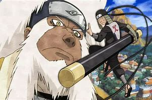
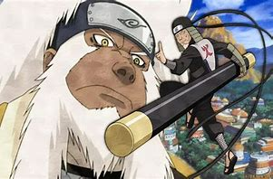

Naruto (Japanese: NARUTOナルト) is a Japanese manga
series written and illustrated by Masashi Kishimoto.
It tells the story of Naruto Uzumaki, a young ninja who seeks recognition from
his peers and dreams of becoming the Hokage, the leader of his village.
The story is told in two parts – the first set in Naruto's pre-teen years,
and the second in his teens.
The series is based on two one-shot manga by Kishimoto: Karakuri (1995),
which earned Kishimoto an honorable mention in
Shueisha's monthly Hop Step Award the following year, and Naruto (1997).
Naruto was serialized in Shueisha's magazine, Weekly Shōnen Jump from 1999 to 2014, and released in tankōbon (book) form in 72 volumes. The manga was adapted into an anime television series produced by Pierrot and Aniplex, which broadcast 220 episodes in Japan from 2002 to 2007; the English dub of the series aired on Cartoon Network and YTV from 2005 to 2009. Naruto: Shippuden, a sequel to the original series, premiered in Japan in 2007, and ended in 2017, after 500 episodes. The English dub was broadcast on Disney XD from 2009 to 2011, airing the first 98 episodes, and then switched over to Adult Swim's Toonami programming block in January 2014, starting over from the first episode. The English dub is still airing weekly on Adult Swim to this day. Viz Media began streaming the anime series on their streaming service Neon Alley in December 2012 on 99 episodes, and ended on March 2016, after 338 episodes. Besides the anime series, Pierrot has developed eleven movies and twelve original video animations (OVAs). Other Naruto-related merchandise includes light novels, video games, and trading cards developed by several companies.
Viz Media licensed the manga and anime for North American production and serialized Naruto in their digital Weekly Shonen Jump magazine. The anime series began airing in the United States and Canada in 2005, and in the United Kingdom and Australia in 2006 and 2007, respectively. The films and most OVAs from the series were also released by Viz, with the first film premiering in movie theaters. The story of Naruto continues with Naruto's son, Boruto Uzumaki, in Boruto: Naruto Next Generations: Boruto wishes to create his own ninja way instead of following his father's.
Naruto is the fourth best-selling manga series in history having 250 million copies in circulation worldwide in 47 countries and regions, with 153 million copies in Japan alone and remaining 97 million copies elsewhere. It has become one of Viz Media's best-selling manga series; their English translations of the volumes have appeared on USA Today and The New York Times bestseller list several times, and the seventh volume won a Quill Award in 2006. Reviewers praised the manga's character development, strong storylines, and well-executed fight scenes, though some felt the fight scenes slowed the story down. Critics noted that the manga, which has a coming-of-age theme, makes use of cultural references from Japanese mythology and Confucianism.